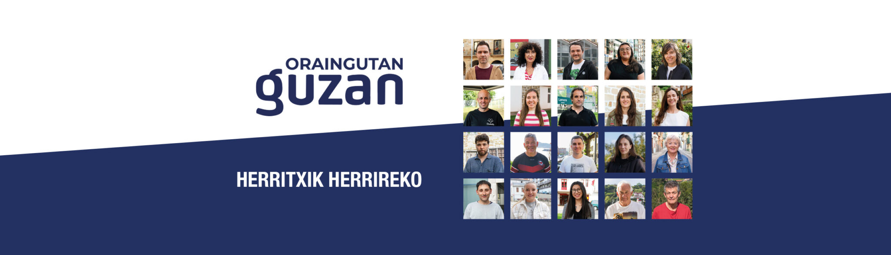
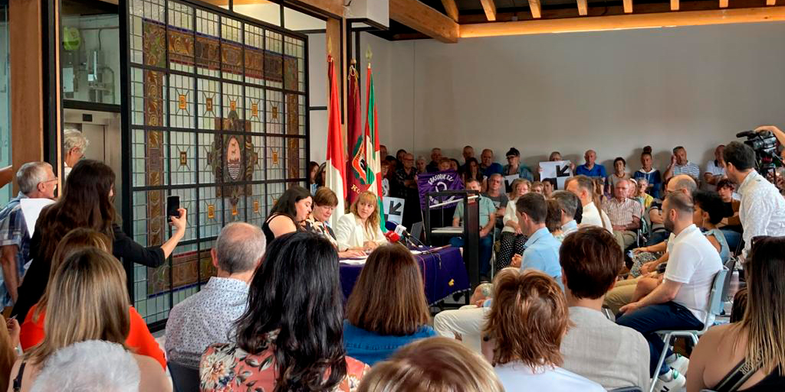
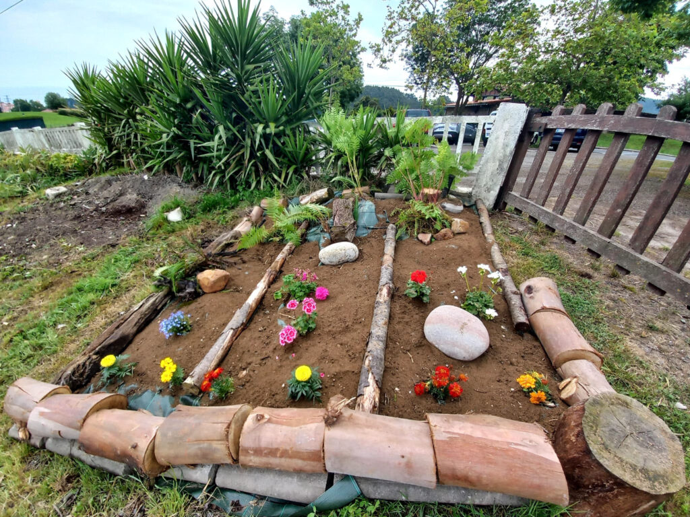
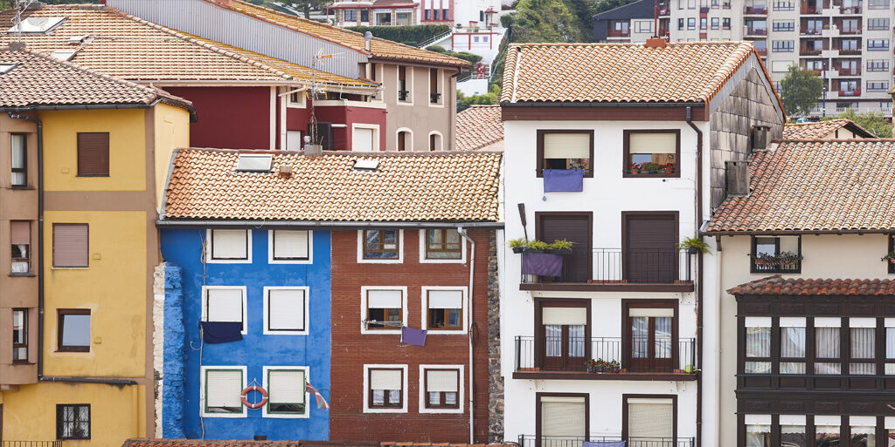
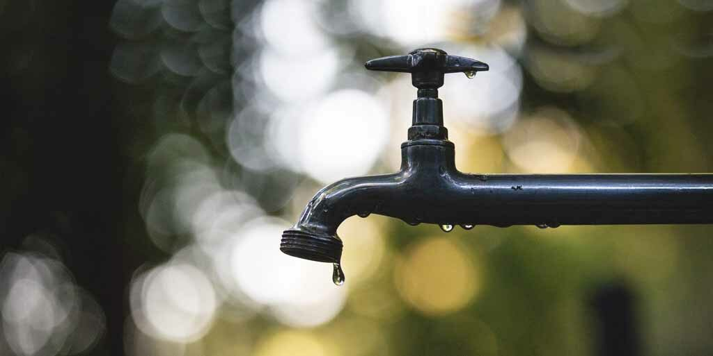
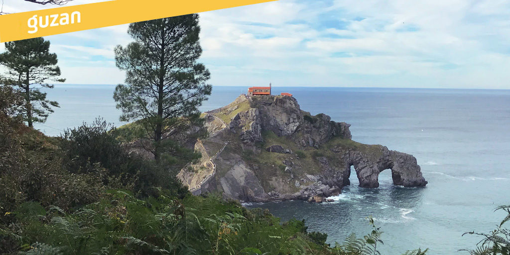

Hurbiltasuna
Herritarren ondoan, auzoz auzo, eguneroko arazoei irtenbide errealak bilatuz.

BERMEO · HERRI PLATAFORMA
GUZAN Bermeoko herri plataforma independentea da. Herritarren beharrak lehenesten ditugu eta udal erabakietan gardentasuna, parte-hartzea eta etorkizun jasangarria defendatzen ditugu.
Herritarren ondoan, auzoz auzo, eguneroko arazoei irtenbide errealak bilatuz.
Informazioa argi eta modu ulergarrian partekatu, erabakiak guztien aurrean azaltzeko.
Bermeoren etorkizuna bertoko ikuspegitik lantzeko lan iraunkorra.

2023/06/18an sinatutako akordioaren testuingurua eta ondorio politikoak azalduz.
Irakurri
Bermeoko ekimen sozialaren inguruko gogoeta eta komunitate lana indartzeko deia.
IrakurriUdal inkestaren datuen interpretazioa eta herriaren kezkak mahai gainean jarriz.
Irakurri
Udal gobernuaren aurrekontu erabakiak kritikoki aztertzen dituen komunikatua.
Irakurri
Bermeok uraren kudeaketan eskumena mantentzeko jarrera politikoa.
Irakurri
Turismo jasangarriaren aldeko proposamenak eta herri eragileekin lankidetza.
IrakurriInstagram postak kargatzen...